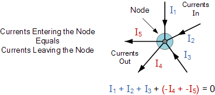
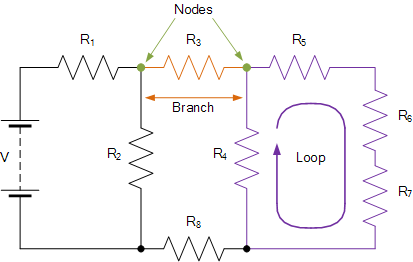
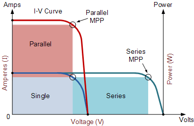

Description
What you'll learn from this course:
Requirements:
Section I: Ohm's Law
Definition:
Ohm's law states that the current through a conductor between two points is directly proportional to the voltage across the two points.
Circuit and equation:

Discussion:
- Ohm's law states that the R in this relation is constant, independent of the current.
- If the resistance is not constant, the previous equation cannot be called Ohm's law, but it can still be used as a definition of static/DC resistance.
- Ohm's law is an empirical relation which accurately describes the conductivity of the vast majority of electrically conductive materials over many orders of magnitude of current. However some materials do not obey Ohm's law; these are called non-ohmic.
- Ohm's law was named after the German physicist Georg Ohm, who, in a treatise published in 1827, described measurements of applied voltage and current through simple electrical circuits containing various lengths of wire. Ohm explained his experimental results by a slightly more complex equation than the modern form above.
Watch a video
Click to learn about How to Analyze Resistive Circuits Using Ohm's Law
Answering the follwing questions to review what you've learned from section I
Section II: Kirchhoff's Voltage Law (KVL)
Definition:
Kirchhoff's Voltage Law(KVL) states that the directed sum of the potential differences (voltages) around any closed loop is zero.
Circuit and equation:
Discussion:
- This law is based on the conservation of "energy given/taken by potential field" (not including energy taken by dissipation). Given a voltage potential, a charge which has completed a closed loop doesn't gain or lose energy as it has gone back to initial potential level.
- This law holds true even when resistance (which causes dissipation of energy) is present in a circuit. The validity of this law in this case can be understood if one realizes that a charge in fact doesn't go back to its starting point, due to dissipation of energy. A charge will just terminate at the negative terminal, instead of positive terminal. This means all the energy given by the potential difference has been fully consumed by resistance which in turn loses the energy as heat dissipation.
- To summarize, Kirchhoff's voltage law has nothing to do with gain or loss of energy by electronic components (resistors, capacitors, etc). It is a law referring to the potential field generated by voltage sources. In this potential field, regardless of what electronic components are present, the gain or loss in "energy given by the potential field" must be zero when a charge completes a closed loop.
Watch a video
Answering the follwing questions to review what you've learned from section II
Section III: Kirchhoff's Current Law (KCL)
Definition:
Kirchhoffs Current Law or KCL, states that the total current or charge entering a junction or node is exactly equal to the charge leaving the node as it has no other place to go except to leave, as no charge is lost within the node.
Circuit and equation:
Here, the three currents entering the node, I1, I2, I3 are all positive in value and the two currents leaving the node, I4 and I5 are negative in value. Then this means we can also rewrite the equation as: I1 + I2 + I3 – I4 – I5 = 0
A Typical DC Circuit:
The basic procedure for using Kirchhoff’s Circuit Laws is as follows:
- Assume all voltages and resistances are given. ( If not label them V1, V2,… R1, R2, etc. )
- Assigns a current to each branch or mesh (clockwise or anticlockwise)
- Label each branch with a branch current. ( I1, I2, I3 etc. )
- Find Kirchhoff’s first law equations for each node.
- Find Kirchhoff’s second law equations for each of the independent loops of the circuit.
- Use Linear simultaneous equations as required to find the unknown currents.
Watch a video
Answering the follwing questions to review what you've learned from section III
Section IV: PV Panel Characteristics
Definition:
A solar or photovoltaic cell has negative front contact and positive back contact. A semiconductor p-n junction is in the middle of these two contacts like a battery. If these two sides are connected by an external circuit, current will start flowing from positive to negative terminal of the solar cell.
Circuit and equation:
Photovoltaic panels can be wired or connected together in either series or parallel combinations, or both to increase the voltage or current capacity of the solar array. If the array panels are connected together in a series combination, then the voltage increases and if connected together in parallel then the current increases.The electrical power in Watts, generated by these different photovoltaic combinations will still be the product of the voltage times the current, ( P = V x I ). However the solar panels are connected together, the upper right hand corner will always be the maximum power point (MPP) of the array.
The Electrical Characteristics of a Photovoltaic Array
The electrical characteristics of a photovoltaic array are summarised in the relationship between the output current and voltage. The amount and intensity of solar insolation (solar irradiance) controls the amount of output current ( I ), and the operating temperature of the solar cells affects the output voltage ( V ) of the PV array. Solar cell I-V characteristic curves that summarise the relationship between the current and voltage are generally provided by the panels manufacturer and are given as:
Solar Array Parameters
- VOC = open-circuit voltage – This is the maximum voltage that the array provides when the terminals are not connected to any load (an open circuit condition). This value is much higher than Vmp which relates to the operation of the PV array which is fixed by the load. This value depends upon the number of PV panels connected together in series.
- ISC = short-circuit current – The maximum current provided by the PV array when the output connectors are shorted together (a short circuit condition). This value is much higher than Imp which relates to the normal operating circuit current.
- MPP = maximum power point – This relates to the point where the power supplied by the array that is connected to the load (batteries, inverters) is at its maximum value, where MPP = Imp x Vmp. The maximum power point of a photovoltaic array is measured in Watts (W) or peak Watts (Wp).
- FF = fill factor – The fill factor is the relationship between the maximum power that the array can actually provide under normal operating conditions and the product of the open-circuit voltage multiplied by the short-circuit current, ( VOC x ISC ) This fill factor value gives an idea of the quality of the array and the closer the fill factor is to 1 (unity), the more power the array can provide. Typical values are between 0.7 and 0.8.
- %eff = percent efficiency – The efficiency of a photovoltaic array is the ratio between the maximum electrical power that the array can produce compared to the amount of solar irradiance hitting the array. The efficiency of a typical solar array is normally low at around 10-12%, depending on the photovoltaic type (monocrystalline, polycrystalline, amorphous or thin film) of cell being used.
Watch a video
Understanding the Voltage – Current (I-V) Curve of a Solar Cell